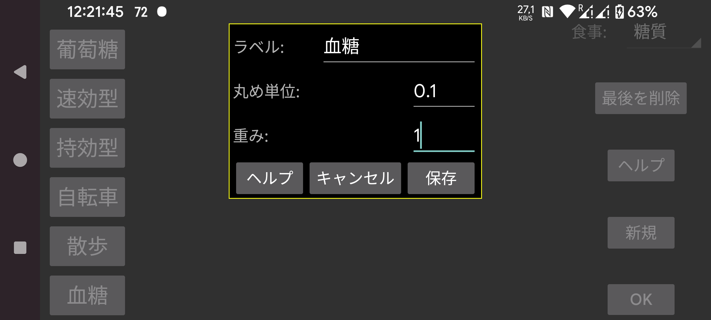

数値を入力する際に使うラベルの名前です。左中メニューの「新規記録」を使って、特定の日時に紐づく数値を追加できます。これらの数値は、その時刻位置で血糖グラフ上に、または一覧として表示できます。
ウォッチアプリ Kerfstok で使用されます。このラベルで入力された数値はこの値の倍数に丸められます。
0 = 丸めなし、0.5 = 0.5 の倍数に丸める、など。
0 に設定すると、数値はその値に関係なく一定の高さでグラフに表示されます。重みが 0 より大きい場合、このラベルで入力された各記録はこの重みを掛けられ、血糖グラフと同じ座標で四角として表示されます。例えば重みを 1 に設定すると、指先穿刺による血糖測定を血糖センサー測定と同じ方法で表示できます。